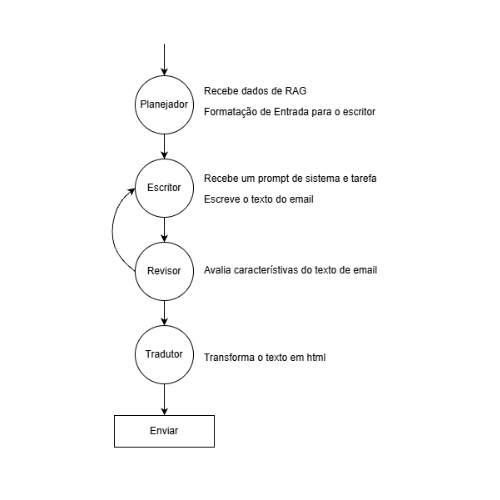

O projeto consiste no desenvolvimento e na implementação de um sistema de agentes de IA autônomos, orquestrado através do LangGraph. O sistema visa automatizar a captação de potenciais clientes, a criação e o envio de mensagens de prospecção personalizadas e a gestão inteligente dos acompanhamentos. O agente é capaz de analisar o contexto do potencial cliente, identificar ausências e sugerir ou executar ações para retomar o contato, otimizando o fluxo de vendas.
Ao contrário das automatizações simples, este projeto utiliza uma arquitetura baseada em grafos. Isto permite que o agente tenha memória, tome decisões não lineares e personalize a comunicação com base em dados não estruturados, tornando a abordagem escalável e adaptável a novos cenários de vendas.
